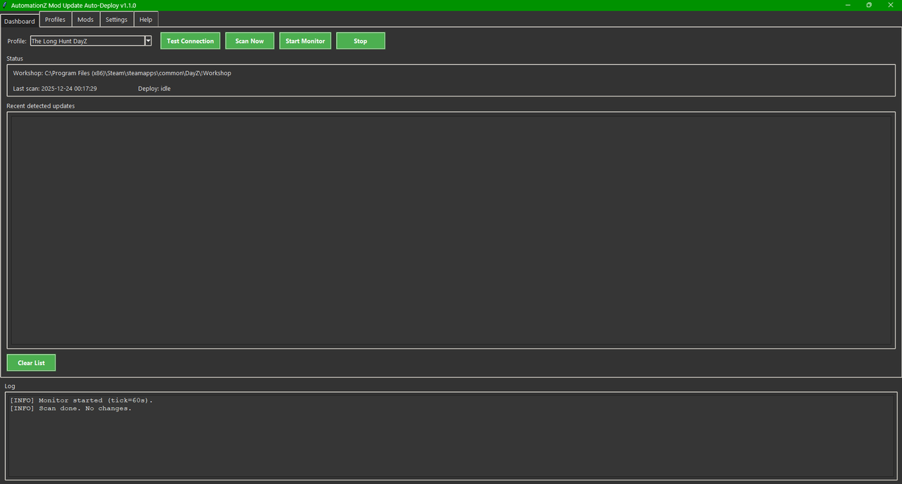
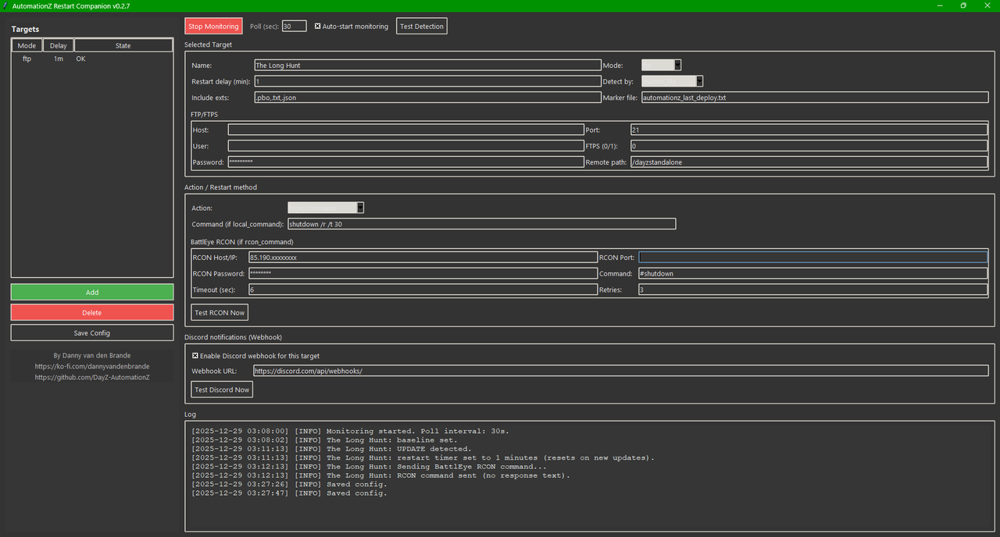

AutomationZ Mod Update Auto-Deploy core
When a Workshop mod updates, servers often desync client/server PBOs and players get hit with errors. This tool watches your Workshop folder and detects changes — then deploys the updated mod files to your server automatically.
“No admin online? Update dropped? Players getting errors?”
Detect → Upload → Confirm → Notify.
Detect → Upload → Confirm → Notify.
What it does
- Monitors your DayZ Workshop mods and detects updates quickly.
- Deploys updated files to your server (FTP/FTPS workflow).
- Uploads a small marker file so other tools can react reliably.
- Optional Discord webhook notifications (so you see it instantly).
Why it matters
- Less downtime and fewer “server is broken” reports.
- Stops the “client has different version” chaos after mod pushes.
- Turns a panic situation into a predictable pipeline.
AutomationZ Restart Companion optional
Deployment is only half the story. Some servers need a restart after updates — but restarting too fast can interrupt players, or restart while another update is still coming in.
What it does
- Watches a marker file (from Auto-Deploy) to know when deployment happened.
- Waits a configurable delay, then sends a BattlEye RCON command.
- Resets the timer if another update arrives (no restart spam).
- Discord notification when a restart is triggered.
The goal isn’t “restart more.” It’s restart only when it’s safe — and only once.
Best use case
- Community servers that want updates deployed automatically.
- Admins who can’t be online 24/7 to babysit Workshop pushes.
- Servers that need a clean restart to apply changes reliably.
How the pipeline works
The tools are designed like a simple, reliable chain. You can run only Auto-Deploy — or run both for a complete “update → deploy → restart” workflow.
- 1) Workshop update detected (Auto-Deploy sees files change)
- 2) Files uploaded to the server
- 3) Marker updated (signal for Restart Companion)
- 4) Restart Companion waits (delay, resets on new updates)
- 5) RCON or LOCAL restart triggers once, then Discord confirms
Admins shouldn’t have to choose between “be online” and “server stays healthy.”
Automate the boring part so you can focus on the community.
Screenshots
Steam Workshop MOD Update Auto Deploy and Restart Companion screenshots.

Mod Update Auto-Deploy (dashboard + deploy log) LOCAL and FTP

Restart Companion (monitor + LOCAL RCON action)